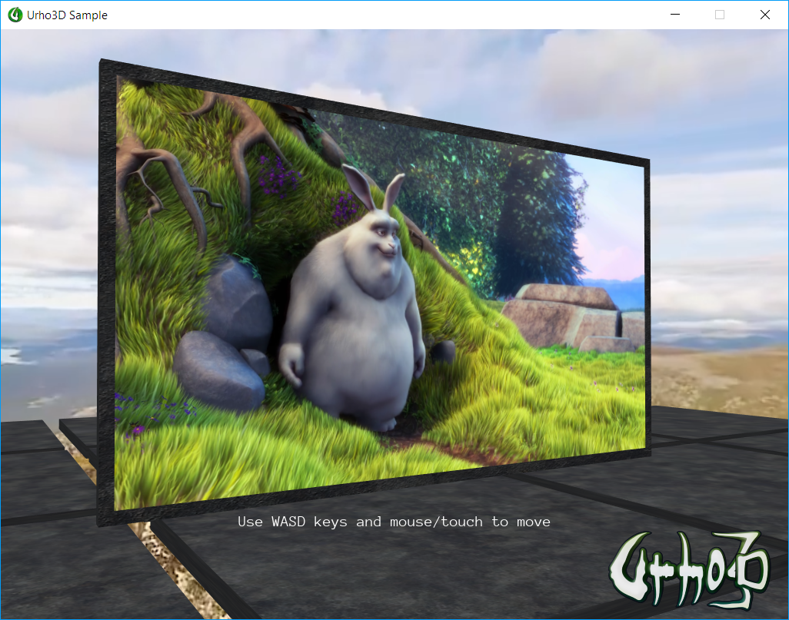

t.artikov
Hi,
I want to share an example of video playback inside a Urho3D scene. It uses Microsoft Media Foundation API for hardware video decoding directly into a Urho3D texture. This approach allows to play a FullHD movie simultaneously with a 4K panoramic video on my relatively old GTX660.

Source code -
https://github.com/t-artikov/Urho3DVideoPlayer
(requires D3D11 Urho3D build to compile)
Binary release -
https://github.com/t-artikov/Urho3DVideoPlayer/releases/download/v1.1/Urho3DVideoPlayer_v1.1.zip
(300M with videos included)
I would be glad if someone will find it useful.